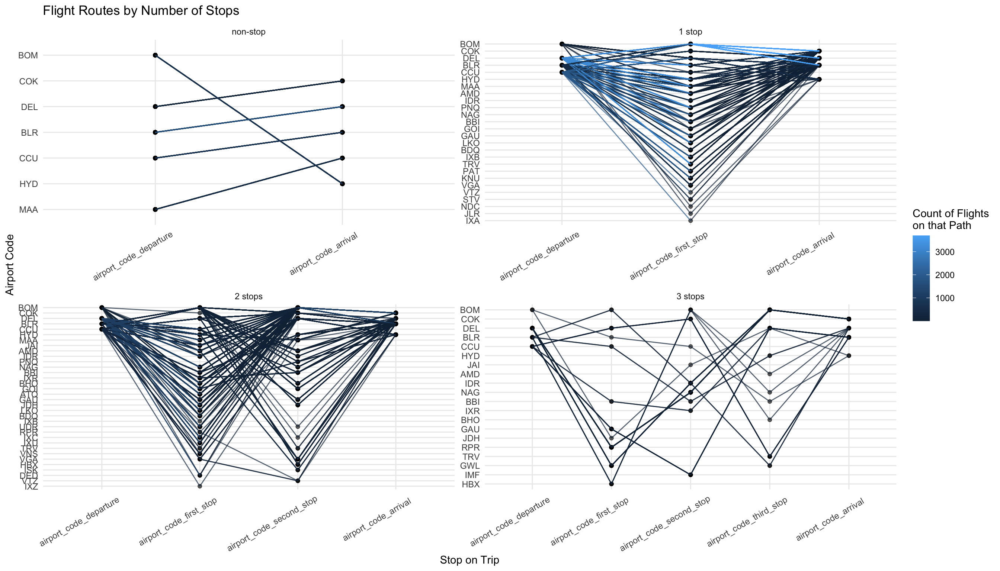
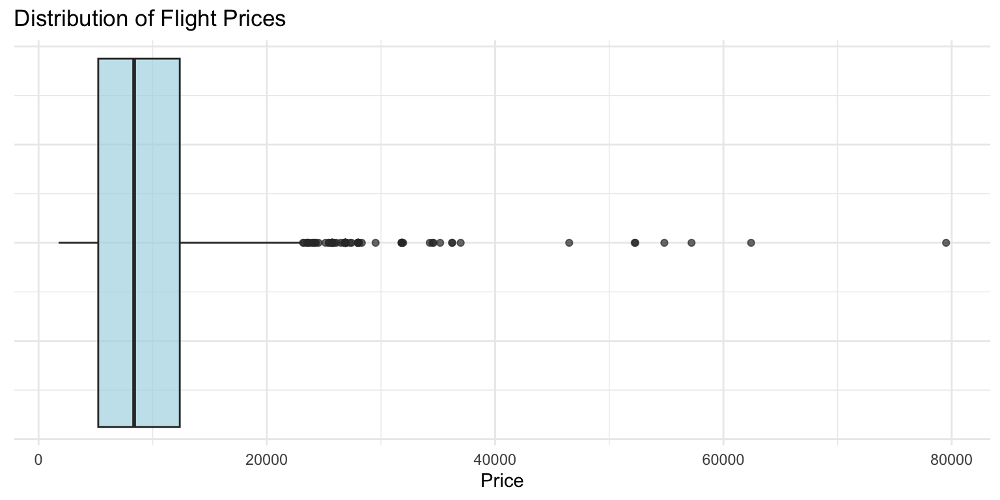
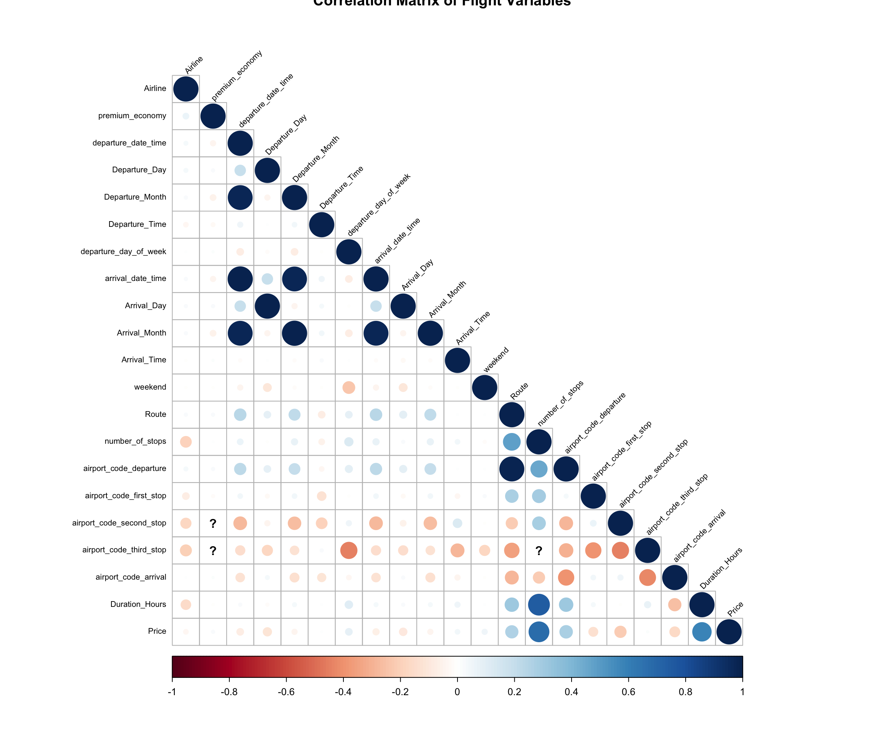
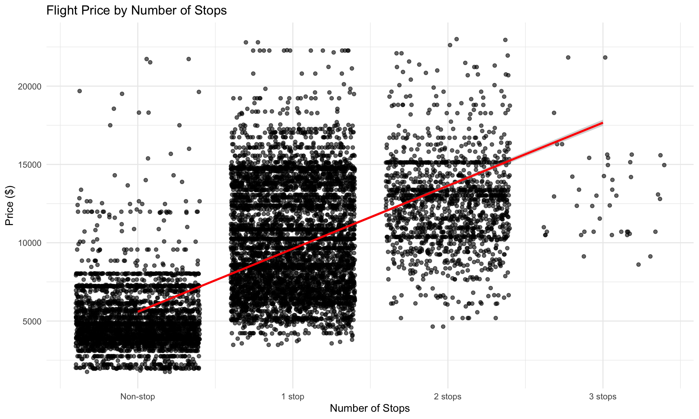
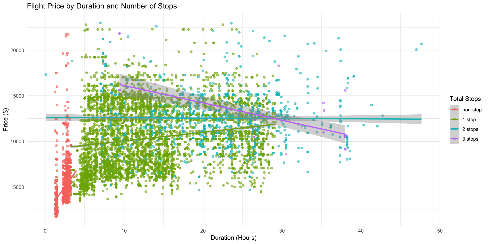
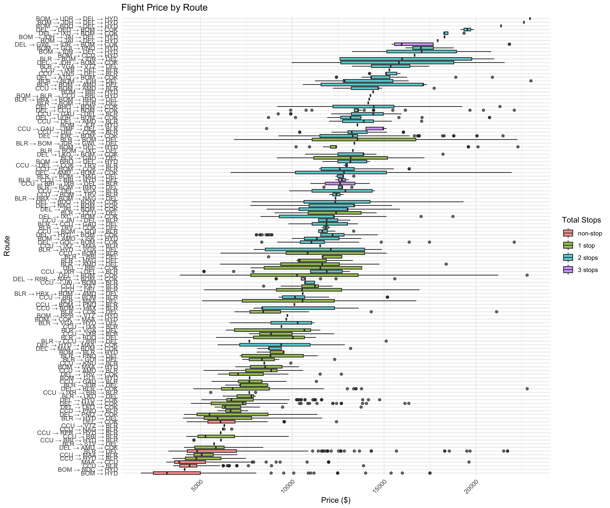
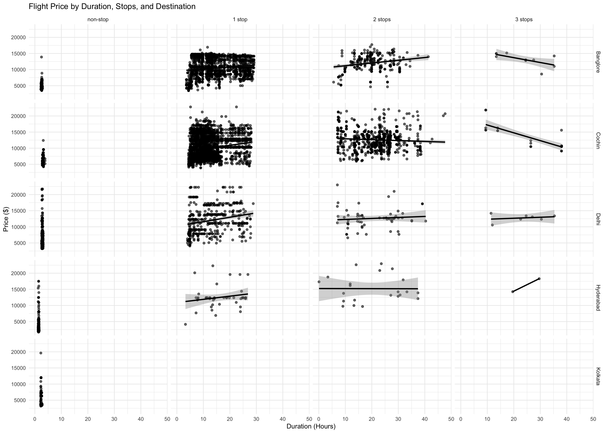
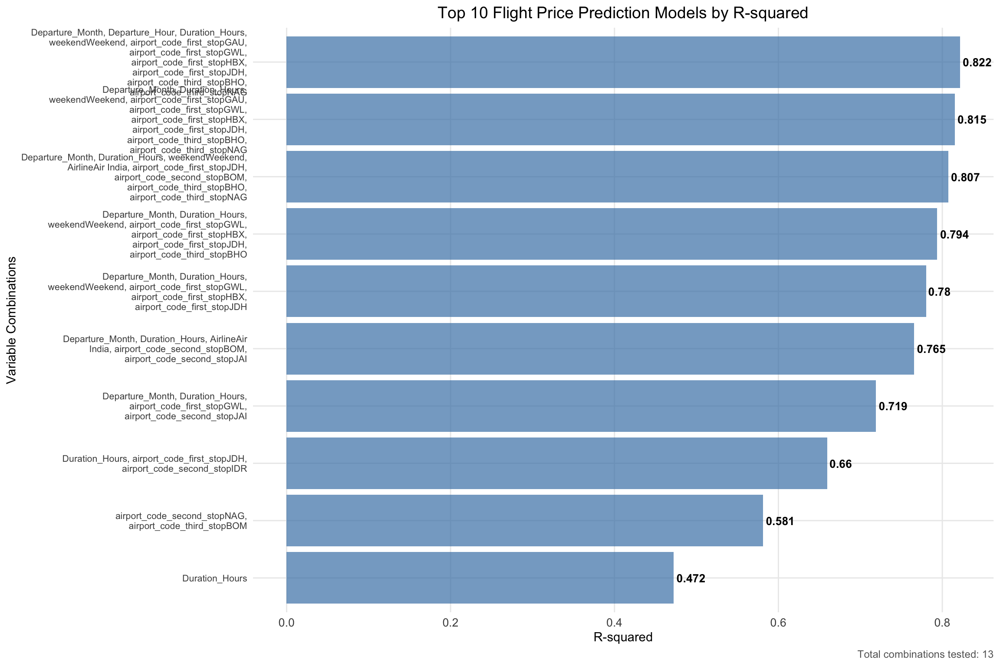

# Accessing and Reading Data
library(googleCloudStorageR) # let's me pull in the data from GCP
library(readxl) # read data
# Data Manipulation
library(tidyverse) # Basic data manipulation function
library(janitor) # Advanced data manipulation function
# Dealing with Dates
library(lubridate)
library(hms)
# Graphing and Analysis
library(corrplot) # graph correlation plots
library(leaps) # fancy regressions
library(broom) # fancy regressions
# Quarto
library(kableExtra)Flight EDA
Getting Set Up
Packages
Data
glimpse(flight_data)Rows: 10,683
Columns: 11
$ Airline <chr> "IndiGo", "Air India", "Jet Airways", "IndiGo", "IndiG…
$ Date_of_Journey <chr> "24/03/2019", "1/05/2019", "9/06/2019", "12/05/2019", …
$ Source <chr> "Banglore", "Kolkata", "Delhi", "Kolkata", "Banglore",…
$ Destination <chr> "New Delhi", "Banglore", "Cochin", "Banglore", "New De…
$ Route <chr> "BLR → DEL", "CCU → IXR → BBI → BLR", "DEL → LKO → BOM…
$ Dep_Time <chr> "22:20", "05:50", "09:25", "18:05", "16:50", "09:00", …
$ Arrival_Time <chr> "01:10 22 Mar", "13:15", "04:25 10 Jun", "23:30", "21:…
$ Duration <chr> "2h 50m", "7h 25m", "19h", "5h 25m", "4h 45m", "2h 25m…
$ Total_Stops <chr> "non-stop", "2 stops", "2 stops", "1 stop", "1 stop", …
$ Additional_Info <chr> "No info", "No info", "No info", "No info", "No info",…
$ Price <dbl> 3897, 7662, 13882, 6218, 13302, 3873, 11087, 22270, 11…Data Cleaning
Removing Missing Data and Data with No Variance
Amount of Missingness by Variable
flight_data %>%
summarise_all(~ sum(is.na(.))) %>%
kbl(caption = "Missing Values by Variable") %>%
kable_styling(bootstrap_options = c("striped", "hover", "condensed"),
full_width = FALSE, position = "left")| Airline | Date_of_Journey | Source | Destination | Route | Dep_Time | Arrival_Time | Duration | Total_Stops | Additional_Info | Price |
|---|---|---|---|---|---|---|---|---|---|---|
| 0 | 0 | 0 | 0 | 1 | 0 | 0 | 0 | 1 | 0 | 0 |
Only one flight has 4 stops
flight_data %>%
filter(Total_Stops == "4 stops") %>%
kbl(caption = "Flight with 4 stops") %>%
kable_styling(bootstrap_options = c("striped", "hover", "condensed"),
full_width = FALSE, position = "left") %>%
scroll_box(width = "100%")| Airline | Date_of_Journey | Source | Destination | Route | Dep_Time | Arrival_Time | Duration | Total_Stops | Additional_Info | Price |
|---|---|---|---|---|---|---|---|---|---|---|
| Air India | 01/03/2019 | Banglore | New Delhi | BLR → CCU → BBI → HYD → VGA → DEL | 05:50 | 11:20 02 Mar | 29h 30m | 4 stops | Change airports | 17686 |
Check for missing Total_Stops
flight_data %>%
filter(is.na(Total_Stops)) %>%
kbl(caption = "Flights with missing Total_Stops") %>%
kable_styling(bootstrap_options = c("striped", "hover", "condensed"),
full_width = FALSE, position = "left")| Airline | Date_of_Journey | Source | Destination | Route | Dep_Time | Arrival_Time | Duration | Total_Stops | Additional_Info | Price |
|---|---|---|---|---|---|---|---|---|---|---|
| Air India | 6/05/2019 | Delhi | Cochin | NA | 09:45 | 09:25 07 May | 23h 40m | NA | No info | 7480 |
The row with 4 stops is an outlier, and the row with missing data can’t be extrapolated. Removing both.
flight_data <- flight_data %>%
filter(Total_Stops != "4 stops") %>%
na.omit()Updating Data Formats
flight_data$Airline <- as.factor(flight_data$Airline)
flight_data$Total_Stops <- factor(flight_data$Total_Stops, levels = c("non-stop", "1 stop", "2 stops", "3 stops", "4 stops"))
flight_data$Additional_Info <- as.factor(flight_data$Additional_Info)Dates
Arrival time is date and time but departure time is just the time, so let’s get that fixed.
flight_data1 <- flight_data %>%
mutate(departure_date_time = dmy_hms(paste0(Date_of_Journey, " ", Dep_Time, ":00"))) There is only a date for arrival if it was different than the departure date. Let’s get that fixed so that both departure and arrival have a full date and time set up.
flight_data2 <- flight_data1 %>%
mutate(Arrival_Time_Only = str_extract(Arrival_Time, "^\\d{2}:\\d{2}"), # Pull out just time
Dep_Time = paste0(Dep_Time, ":00"),
Arrival_Time_Only = paste0(Arrival_Time_Only, ":00"),
Arrival_Date = str_extract(Arrival_Time, "\\d{1,2} \\w{3}$") # Pull out just date
) %>%
separate(Arrival_Date, into = c("Arrival_Day", "Arrival_Month"), sep = " ", remove = FALSE) %>%
mutate(Arrival_Month_Num = case_when(Arrival_Month == "Jan" ~ 01, # replacing the words with numbers
Arrival_Month == "Feb" ~ 02,
Arrival_Month == "Mar" ~ 03,
Arrival_Month == "Apr" ~ 04,
Arrival_Month == "May" ~ 05,
Arrival_Month == "Jun" ~ 06,
Arrival_Month == "Jul" ~ 07,
Arrival_Month == "Aug" ~ 08,
Arrival_Month == "Sep" ~ 09,
Arrival_Month == "Oct" ~ 10,
Arrival_Month == "Nov" ~ 11,
Arrival_Month == "Dec" ~ 12)) %>%
separate(Date_of_Journey, # The dates don't have years, so pulling out the departure years as reference
into = c("Departure_Day", "Departure_Month", "Departure_Year"),
sep = "/",
remove = FALSE) %>%
mutate(Arrival_Day = ifelse(!is.na(Arrival_Day), Arrival_Day, as.numeric(Departure_Day)),
Arrival_Month_Num = ifelse(!is.na(Arrival_Month_Num), Arrival_Month_Num, as.numeric(Departure_Month)),
Arrival_Date_combined = paste0(Departure_Year, "-", Arrival_Month_Num, "-", Arrival_Day)) %>%
mutate(arrival_date_time = ymd_hms(paste0(Arrival_Date_combined, " ", Arrival_Time_Only))) %>%
select(-Arrival_Month, -Arrival_Time) %>%
rename(Departure_Time = Dep_Time,
Arrival_Month = Arrival_Month_Num,
Arrival_Time = Arrival_Time_Only) %>%
select(Airline, Date_of_Journey,
departure_date_time, Departure_Day, Departure_Month, Departure_Year, Departure_Time,
arrival_date_time, Arrival_Day, Arrival_Month, Arrival_Time,
Duration,
Source, Destination, Route, Total_Stops, Price, Additional_Info)
flight_data3 <- flight_data2Making sure all the dates are formatted correctly
flight_data3$Departure_Day <- as.numeric(flight_data3$Departure_Day)
flight_data3$Departure_Month <- as.numeric(flight_data3$Departure_Month)
flight_data3$Departure_Year <- as.numeric(flight_data3$Departure_Year)
flight_data3$Arrival_Day <- as.numeric(flight_data3$Arrival_Day)
flight_data3$Departure_Time <- as_hms(flight_data3$Departure_Time)
flight_data3$Arrival_Time <- as_hms(flight_data3$Arrival_Time)
flight_data4 <- flight_data3Let’s add features for day of week and hour of departure
flight_data4$departure_day_of_week <- weekdays(flight_data4$departure_date_time)
flight_data4$Departure_Hour = hour(flight_data4$Departure_Time)I don’t need to care about time zones since all the cities are in the same time zone.
unique(flight_data4$Source)[1] "Banglore" "Kolkata" "Delhi" "Chennai" "Mumbai" unique(flight_data4$Destination)[1] "New Delhi" "Banglore" "Cochin" "Kolkata" "Delhi" "Hyderabad"Duration
First calculating duration
flight_data4 <- flight_data4 %>%
mutate(
Duration_Hours = replace_na(as.numeric(str_extract(Duration, "\\d+(?=h)")), 0) +
replace_na(as.numeric(str_extract(Duration, "\\d+(?=m)")), 0) / 60
)Then examining if calculated duration is the same as provided duration. There are a handful of flights that appear to be different. For some, it seems the arrival is before the departure.
duration_comparison <- flight_data4 %>%
rowwise() %>%
mutate(calculated_duration = arrival_date_time - departure_date_time,
calculated_duration_hours = as.numeric(calculated_duration, units = "hours")
) %>%
mutate(difference_between_calculation_file = Duration_Hours - calculated_duration_hours,
abs_difference_between_calculation_file = abs(difference_between_calculation_file)) %>%
filter(difference_between_calculation_file > 1) %>%
select(departure_date_time, arrival_date_time, calculated_duration_hours, Duration_Hours, difference_between_calculation_file) %>%
head(10)
duration_comparison %>%
kbl(caption = "Flights with Duration Discrepancies",
col.names = c("Departure", "Arrival", "Calculated Hours", "File Hours", "Difference")) %>%
kable_styling(bootstrap_options = c("striped", "hover", "condensed"),
full_width = FALSE, position = "left")| Departure | Arrival | Calculated Hours | File Hours | Difference |
|---|---|---|---|---|
| 2019-03-24 22:20:00 | 2019-03-22 01:10:00 | -69.16667 | 2.833333 | 72 |
| 2019-03-21 22:00:00 | 2019-03-19 13:20:00 | -56.66667 | 15.333333 | 72 |
| 2019-03-18 14:05:00 | 2019-03-16 05:05:00 | -57.00000 | 15.000000 | 72 |
| 2019-03-18 16:55:00 | 2019-03-16 09:00:00 | -55.91667 | 16.083333 | 72 |
| 2019-03-21 22:00:00 | 2019-03-19 10:50:00 | -59.16667 | 12.833333 | 72 |
| 2019-03-15 22:55:00 | 2019-03-13 05:05:00 | -65.83333 | 6.166667 | 72 |
| 2019-03-21 11:50:00 | 2019-03-19 08:55:00 | -50.91667 | 21.083333 | 72 |
| 2019-03-18 07:00:00 | 2019-03-16 07:40:00 | -47.33333 | 24.666667 | 72 |
| 2019-03-18 11:05:00 | 2019-03-16 22:10:00 | -36.91667 | 35.083333 | 72 |
| 2019-03-21 19:35:00 | 2019-03-19 00:35:00 | -67.00000 | 5.000000 | 72 |
No time-based patterns to wonky durations.
flight_data4 %>%
rowwise() %>%
mutate(calculated_duration = arrival_date_time - departure_date_time,
calculated_duration_hours = as.numeric(calculated_duration, units = "hours")
) %>%
mutate(difference_between_calculation_file = Duration_Hours - calculated_duration_hours,
abs_difference_between_calculation_file = abs(difference_between_calculation_file)) %>%
filter(difference_between_calculation_file > 1) %>%
ggplot(aes(x = departure_date_time)) +
geom_histogram(bins = 30, fill = "steelblue", alpha = 0.7) +
labs(title = "Distribution of Flights with Duration Discrepancies",
x = "Departure Date/Time",
y = "Count") +
theme_minimal()
Remove data where the arrival was before the departure.
flight_data4 <- flight_data4 %>%
rowwise() %>%
mutate(wonky_times = case_when(arrival_date_time > departure_date_time ~ "keep",
TRUE ~ "remove"
)) %>%
filter(wonky_times == "keep") %>%
select(-wonky_times) %>%
ungroup() Route Analysis
Let’s look at route structure
route_sample <- unique(flight_data4$Route)[1:10]
route_sample %>%
kbl(caption = "Sample Routes") %>%
kable_styling(bootstrap_options = c("striped", "hover", "condensed"),
full_width = FALSE, position = "left")| x |
|---|
| CCU → IXR → BBI → BLR |
| DEL → LKO → BOM → COK |
| CCU → NAG → BLR |
| BLR → NAG → DEL |
| CCU → BLR |
| BLR → BOM → DEL |
| DEL → BOM → COK |
| DEL → BLR → COK |
| MAA → CCU |
| CCU → BOM → BLR |
Parsing route into individual airport codes
flight_data5 <- flight_data4 %>%
separate_wider_delim(
cols = Route,
delim = " → ",
names = c("airport_code_departure", "airport_code_first_stop",
"airport_code_second_stop", "airport_code_third_stop", "airport_code_arrival"),
too_few = "align_start", # Fill missing values with NA on the right
too_many = "drop", # Drop extra stops beyond 5 airports
cols_remove = FALSE
) %>%
# Count the actual number of airports in each route
mutate(num_airports = str_count(Route, " → ") + 1) %>%
# Fix the column assignments based on actual number of airports
mutate(
# Fix arrival column - always the last airport
airport_code_arrival = case_when(
num_airports == 2 ~ airport_code_first_stop, # 2 airports: departure → arrival
num_airports == 3 ~ airport_code_second_stop, # 3 airports: departure → stop → arrival
num_airports == 4 ~ airport_code_third_stop, # 4 airports: departure → stop → stop → arrival
TRUE ~ airport_code_arrival # 5 airports: departure → stop → stop → stop → arrival
),
# Fix third stop column
airport_code_third_stop = case_when(
num_airports <= 4 ~ NA_character_, # No third stop for routes with 4 or fewer airports
TRUE ~ airport_code_third_stop # Keep third stop only for 5-airport routes
),
# Fix second stop column
airport_code_second_stop = case_when(
num_airports <= 3 ~ NA_character_, # No second stop for routes with 3 or fewer airports
TRUE ~ airport_code_second_stop # Keep second stop for 4+ airport routes
),
# Fix first stop column
airport_code_first_stop = case_when(
num_airports <= 2 ~ NA_character_, # No first stop for non-stop flights
TRUE ~ airport_code_first_stop # Keep first stop for 3+ airport routes
)
) %>%
select(-num_airports)
Verify the route parsing results
route_verification <- flight_data5 %>%
select(Route, airport_code_departure, airport_code_first_stop,
airport_code_second_stop, airport_code_third_stop, airport_code_arrival) %>%
# Show examples of different route types
slice(c(1:5,
which(str_count(flight_data5$Route, " → ") == 1)[1:2], # 2 airports
which(str_count(flight_data5$Route, " → ") == 2)[1:2], # 3 airports
which(str_count(flight_data5$Route, " → ") == 3)[1:2], # 4 airports
which(str_count(flight_data5$Route, " → ") == 4)[1:2] # 5 airports (if any)
)) %>%
arrange(str_count(Route, " → "))
route_verification %>%
kbl(caption = "Route Parsing Verification") %>%
kable_styling(bootstrap_options = c("striped", "hover", "condensed"),
full_width = FALSE, position = "left") %>%
scroll_box(width = "100%", height = "300px")| Route | airport_code_departure | airport_code_first_stop | airport_code_second_stop | airport_code_third_stop | airport_code_arrival |
|---|---|---|---|---|---|
| CCU → BLR | CCU | NA | NA | NA | BLR |
| CCU → BLR | CCU | NA | NA | NA | BLR |
| CCU → BLR | CCU | NA | NA | NA | BLR |
| CCU → NAG → BLR | CCU | NAG | NA | NA | BLR |
| BLR → NAG → DEL | BLR | NAG | NA | NA | DEL |
| CCU → NAG → BLR | CCU | NAG | NA | NA | BLR |
| BLR → NAG → DEL | BLR | NAG | NA | NA | DEL |
| CCU → IXR → BBI → BLR | CCU | IXR | BBI | NA | BLR |
| DEL → LKO → BOM → COK | DEL | LKO | BOM | NA | COK |
| CCU → IXR → BBI → BLR | CCU | IXR | BBI | NA | BLR |
| DEL → LKO → BOM → COK | DEL | LKO | BOM | NA | COK |
| DEL → RPR → NAG → BOM → COK | DEL | RPR | NAG | BOM | COK |
| CCU → BBI → IXR → DEL → BLR | CCU | BBI | IXR | DEL | BLR |
Checking unique airports by category
cat("Source cities:", paste(unique(flight_data5$Source), collapse = ", "), "\n")Source cities: Kolkata, Delhi, Banglore, Chennai, Mumbai cat("Destination cities:", paste(unique(flight_data5$Destination), collapse = ", "), "\n")Destination cities: Banglore, Cochin, New Delhi, Kolkata, Delhi, Hyderabad cat("First stop airports:", paste(unique(flight_data5$airport_code_first_stop), collapse = ", "), "\n")First stop airports: IXR, LKO, NAG, NA, BOM, BLR, AMD, PNQ, CCU, IDR, GAU, MAA, HYD, DEL, BHO, JAI, ATQ, JDH, BBI, GOI, BDQ, TRV, IXU, IXB, UDR, RPR, DED, VGA, COK, VNS, IXC, PAT, JLR, KNU, GWL, VTZ, NDC, IXZ, HBX, IXA, STV Checking if City and airport code match up perfectly
# Check departure alignment
departure_check <- flight_data5 %>%
group_by(Source, airport_code_departure) %>%
summarise(count = n(), .groups = "drop")
departure_check %>%
kbl(caption = "Source City vs Departure Airport Alignment") %>%
kable_styling(bootstrap_options = c("striped", "hover", "condensed"),
full_width = FALSE, position = "left")| Source | airport_code_departure | count |
|---|---|---|
| Banglore | BLR | 2109 |
| Chennai | MAA | 380 |
| Delhi | DEL | 4536 |
| Kolkata | CCU | 2871 |
| Mumbai | BOM | 693 |
But I’m also realizing that the Destination has New Delhi instead of Delhi, so need to change that first.
flight_data5 <- flight_data5 %>%
mutate(Destination = ifelse(Destination == "New Delhi", "Delhi", Destination))
# Check arrival alignment
arrival_check <- flight_data5 %>%
group_by(Destination, airport_code_arrival) %>%
summarise(count = n(), .groups = "drop")
arrival_check %>%
kbl(caption = "Destination City vs Arrival Airport Alignment") %>%
kable_styling(bootstrap_options = c("striped", "hover", "condensed"),
full_width = FALSE, position = "left")| Destination | airport_code_arrival | count |
|---|---|---|
| Banglore | BLR | 2871 |
| Cochin | COK | 4536 |
| Delhi | DEL | 2109 |
| Hyderabad | HYD | 693 |
| Kolkata | CCU | 380 |
flight_data6 <- flight_data5Exploratory Data Analysis
Routes
Visualizing flight routes by number of stops
flight_data6 %>%
mutate(row = row_number()) %>%
select(row, Total_Stops, airport_code_departure, airport_code_first_stop, airport_code_second_stop, airport_code_third_stop, airport_code_arrival) %>%
pivot_longer(!row:Total_Stops, names_to = "stop_on_trip", values_to = "airport_code") %>%
group_by(Total_Stops, stop_on_trip, airport_code) %>%
mutate(count = n()) %>%
mutate(stop_on_trip = factor(stop_on_trip, levels = c("airport_code_departure",
"airport_code_first_stop",
"airport_code_second_stop",
"airport_code_third_stop",
"airport_code_arrival"))) %>%
filter(!is.na(airport_code)) %>%
ggplot(aes(x = stop_on_trip, y = reorder(airport_code,count), group = row)) +
geom_point(alpha = 0.6) +
geom_line(aes(color = count), alpha = 0.7) +
labs(title = "Flight Routes by Number of Stops",
x = "Stop on Trip",
y = "Airport Code",
color = "Count of Flights\non that Path") +
facet_wrap(.~Total_Stops, scales = "free") +
theme_minimal() +
theme(axis.text.x = element_text(angle = 30, vjust = .8, hjust = .8))
Price Outliers
Number of Price Outliers
nrow(rstatix::identify_outliers(data = flight_data6, variable = "Price"))[1] 90Visualizations of outliers
flight_data6 %>%
ggplot(aes(x = Price)) +
geom_boxplot(fill = "lightblue", alpha = 0.7) +
labs(title = "Distribution of Flight Prices",
x = "Price") +
theme_minimal() +
theme(axis.text.y = element_blank(),
axis.ticks.y = element_blank())
An outlier is a value 1.5 times that of the IQR. Below, we see outliers are prices above $23,170.
outlier_summary <- rstatix::identify_outliers(data = flight_data6, variable = "Price")
# Create a more readable summary table
outlier_summary %>%
select(Airline, Date_of_Journey, departure_date_time, Price, is.outlier, is.extreme) %>%
head(10) %>%
kbl(caption = "Sample of Price Outliers",
col.names = c("Airline", "Journey Date", "Departure Time", "Price", "Outlier", "Extreme")) %>%
kable_styling(bootstrap_options = c("striped", "hover", "condensed"),
full_width = FALSE, position = "left")| Airline | Journey Date | Departure Time | Price | Outlier | Extreme |
|---|---|---|---|---|---|
| Air India | 1/03/2019 | 2019-03-01 23:00:00 | 27430 | TRUE | FALSE |
| Multiple carriers | 1/03/2019 | 2019-03-01 12:50:00 | 36983 | TRUE | TRUE |
| Jet Airways | 01/03/2019 | 2019-03-01 08:55:00 | 26890 | TRUE | FALSE |
| Jet Airways | 01/03/2019 | 2019-03-01 07:00:00 | 26890 | TRUE | FALSE |
| Air India | 6/03/2019 | 2019-03-06 09:40:00 | 25139 | TRUE | FALSE |
| Jet Airways Business | 01/03/2019 | 2019-03-01 05:45:00 | 52229 | TRUE | TRUE |
| Air India | 01/03/2019 | 2019-03-01 08:50:00 | 26743 | TRUE | FALSE |
| Jet Airways | 01/03/2019 | 2019-03-01 05:45:00 | 26890 | TRUE | FALSE |
| Jet Airways | 01/03/2019 | 2019-03-01 22:50:00 | 25735 | TRUE | FALSE |
| Jet Airways | 01/03/2019 | 2019-03-01 05:45:00 | 27992 | TRUE | FALSE |
Removing the outliers.
flight_data7 <- flight_data6 %>%
filter(Price < 23170)Correlation Matrix
Including the variables in my correlation Matrix
corr.data <- flight_data7 %>%
mutate(weekend = case_when(departure_day_of_week == "Sunday" | departure_day_of_week == "Saturday" ~ "Weekend",
TRUE ~ "Weekday"),
number_of_stops = case_when(Total_Stops == "non-stop" ~ 0,
Total_Stops == "1 stop" ~ 1,
Total_Stops == "2 stops" ~ 2,
Total_Stops == "3 stops" ~ 3,
Total_Stops == "4 stops" ~ 4),
premium_economy = str_detect(Airline, "Premium")) %>%
select(Airline, premium_economy, departure_date_time, Departure_Day, Departure_Month, Departure_Time,
departure_day_of_week, arrival_date_time, Arrival_Day, Arrival_Month, Arrival_Time,
weekend, Route, number_of_stops, airport_code_departure, airport_code_first_stop,
airport_code_second_stop, airport_code_third_stop, airport_code_arrival,
Duration_Hours, Price) %>%
data.matrix()
corr_matrix <- round(cor(corr.data, use="pairwise.complete.obs", method="pearson"), 2)
corrplot(corr_matrix, method="circle", type="lower", tl.col = "black", tl.cex = .65,
tl.srt = 45, title = "Correlation Matrix of Flight Variables")
Let’s look at just the Price relationships.
corr_matrix_df <- rstatix::cor_gather(corr_matrix)
price_correlations <- corr_matrix_df %>%
filter(var1 == 'Price') %>%
arrange(desc(abs(cor))) %>%
mutate(cor = round(cor, 3))
price_correlations %>%
kbl(caption = "Price Correlations with Other Variables",
col.names = c("Variable 1", "Variable 2", "Correlation")) %>%
kable_styling(bootstrap_options = c("striped", "hover", "condensed"),
full_width = FALSE, position = "left") %>%
scroll_box(width = "100%", height = "400px")| Variable 1 | Variable 2 | Correlation |
|---|---|---|
| Price | Price | 1.00 |
| Price | number_of_stops | 0.67 |
| Price | Duration_Hours | 0.58 |
| Price | airport_code_departure | 0.27 |
| Price | Route | 0.26 |
| Price | airport_code_second_stop | -0.22 |
| Price | airport_code_arrival | -0.17 |
| Price | airport_code_first_stop | -0.14 |
| Price | Departure_Day | -0.12 |
| Price | Arrival_Day | -0.10 |
| Price | departure_date_time | -0.08 |
| Price | departure_day_of_week | 0.08 |
| Price | arrival_date_time | -0.07 |
| Price | Departure_Month | -0.05 |
| Price | Arrival_Month | -0.05 |
| Price | weekend | 0.05 |
| Price | Airline | -0.04 |
| Price | Arrival_Time | 0.04 |
| Price | premium_economy | 0.02 |
| Price | airport_code_third_stop | 0.01 |
| Price | Departure_Time | 0.00 |
Number of stops and duration are easy enough to figure out. Route and second airport code and destination are all pretty high up there. There’s something about these variables that has some influence but I’m not sure what.
Graphing Strongest Relationships
Price by total stops
flight_data7 %>%
filter(!is.na(Total_Stops)) %>%
mutate(number_of_stops = case_when(Total_Stops == "non-stop" ~ 0,
Total_Stops == "1 stop" ~ 1,
Total_Stops == "2 stops" ~ 2,
Total_Stops == "3 stops" ~ 3,
Total_Stops == "4 stops" ~ 4)) %>%
ggplot(aes(x = number_of_stops, y = Price)) +
geom_point(position = 'jitter', alpha = 0.6) +
geom_smooth(method = 'lm', color = "red", se = TRUE) +
labs(title = "Flight Price by Number of Stops",
x = "Number of Stops",
y = "Price ($)") +
theme_minimal() +
scale_x_continuous(breaks = 0:3, labels = c("Non-stop", "1 stop", "2 stops", "3 stops"))
Duration of flight
flight_data7 %>%
filter(!is.na(Duration_Hours)) %>%
ggplot(aes(x = Duration_Hours, y = Price)) +
geom_point(alpha = 0.6) +
geom_smooth(method = 'lm', color = "red", se = TRUE) +
labs(title = "Flight Price by Duration",
x = "Duration (Hours)",
y = "Price ($)") +
theme_minimal()
Both number of stops and duration
flight_data7 %>%
filter(!is.na(Duration_Hours)) %>%
filter(!is.na(Total_Stops)) %>%
ggplot(aes(x = Duration_Hours, y = Price, color = Total_Stops)) +
geom_point(alpha = 0.6) +
geom_smooth(method = 'lm', se = TRUE) +
labs(title = "Flight Price by Duration and Number of Stops",
x = "Duration (Hours)",
y = "Price ($)",
color = "Total Stops") +
theme_minimal() +
theme(legend.position = "right")
Route Analysis
Well there is a clear impact of route, but not necessarily correlated with number of stops.
flight_data7 %>%
filter(!is.na(Route)) %>%
ggplot(aes(x = reorder(Route, Price), y = Price, fill = Total_Stops)) +
geom_boxplot(alpha = 0.7) +
labs(title = "Flight Price by Route",
x = "Route",
y = "Price ($)",
fill = "Total Stops") +
theme_minimal() +
theme(axis.text.x = element_text(angle = 45, hjust = 1)) +
coord_flip() 
Bringing multiple variables together
flight_data7 %>%
ggplot(aes(x = Duration_Hours, y = Price)) +
geom_point(alpha = 0.6) +
geom_smooth(method = 'lm', color = "black", se = TRUE) +
facet_grid(rows = vars(Destination),
cols = vars(Total_Stops)) +
labs(title = "Flight Price by Duration, Stops, and Destination",
x = "Duration (Hours)",
y = "Price ($)") +
theme_minimal() +
theme(strip.text = element_text(size = 9))
Regressions like a statistician
Approach 1
As a statistician, I would pick the variables that have the strongest relationships with the outcome, don’t have too much multicollinearity, and a theoretical reason to influence Price.
From below, we can see that the number of stops significantly predicts Price when controlling for other variables, as does duration, departure airport, and route.
regression.flight <- lm(Price ~ Total_Stops + Duration_Hours +
airport_code_departure + Route, data = flight_data7)
# Create a tidy summary
regression_summary <- tidy(regression.flight) %>%
mutate(across(where(is.numeric), ~ round(.x, 4)))
regression_summary %>%
kbl(caption = "Statistician's Regression Model Results",
col.names = c("Term", "Estimate", "Std Error", "t-statistic", "p-value")) %>%
kable_styling(bootstrap_options = c("striped", "hover", "condensed"),
full_width = FALSE, position = "left") %>%
scroll_box(width = "100%", height = "400px")| Term | Estimate | Std Error | t-statistic | p-value |
|---|---|---|---|---|
| (Intercept) | 9701.6109 | 869.0608 | 11.1633 | 0.0000 |
| Total_Stops1 stop | 1139.4231 | 649.9356 | 1.7531 | 0.0796 |
| Total_Stops2 stops | 7121.5517 | 617.9348 | 11.5248 | 0.0000 |
| Total_Stops3 stops | 3959.2440 | 644.0748 | 6.1472 | 0.0000 |
| Duration_Hours | 19.1752 | 4.8461 | 3.9568 | 0.0001 |
| airport_code_departureBOM | 5674.6212 | 2686.5043 | 2.1123 | 0.0347 |
| airport_code_departureCCU | -4647.0958 | 2548.0820 | -1.8238 | 0.0682 |
| airport_code_departureDEL | -3445.8404 | 852.8178 | -4.0405 | 0.0001 |
| airport_code_departureMAA | -4960.3006 | 878.6765 | -5.6452 | 0.0000 |
| RouteBLR → BBI → DEL | 381.3064 | 1253.5718 | 0.3042 | 0.7610 |
| RouteBLR → BDQ → DEL | -1793.5685 | 1105.2300 | -1.6228 | 0.1047 |
| RouteBLR → BOM → AMD → DEL | -2553.8200 | 1516.1433 | -1.6844 | 0.0921 |
| RouteBLR → BOM → BHO → DEL | -4658.0159 | 1515.8505 | -3.0729 | 0.0021 |
| RouteBLR → BOM → DEL | 2349.5586 | 602.8213 | 3.8976 | 0.0001 |
| RouteBLR → BOM → IDR → DEL | -955.8349 | 1614.6382 | -0.5920 | 0.5539 |
| RouteBLR → BOM → IDR → GWL → DEL | -849.1121 | 2040.1473 | -0.4162 | 0.6773 |
| RouteBLR → BOM → IXC → DEL | -4077.8426 | 2686.9313 | -1.5177 | 0.1291 |
| RouteBLR → BOM → JDH → DEL | -2248.9786 | 1446.5784 | -1.5547 | 0.1201 |
| RouteBLR → BOM → NAG → DEL | -4525.7654 | 1446.7210 | -3.1283 | 0.0018 |
| RouteBLR → BOM → UDR → DEL | -3287.3787 | 2687.2230 | -1.2233 | 0.2212 |
| RouteBLR → CCU → BBI → DEL | -7973.6882 | 1515.7022 | -5.2607 | 0.0000 |
| RouteBLR → CCU → BBI → HYD → DEL | -1497.8441 | 2040.1211 | -0.7342 | 0.4628 |
| RouteBLR → CCU → DEL | 1134.2249 | 949.0002 | 1.1952 | 0.2320 |
| RouteBLR → CCU → GAU → DEL | -5349.1850 | 1297.1851 | -4.1237 | 0.0000 |
| RouteBLR → COK → DEL | -1410.5535 | 924.1852 | -1.5263 | 0.1270 |
| RouteBLR → DEL | -4221.5163 | 871.8087 | -4.8423 | 0.0000 |
| RouteBLR → GAU → DEL | 1984.6260 | 1848.3272 | 1.0737 | 0.2830 |
| RouteBLR → GOI → DEL | -2238.4595 | 1105.0790 | -2.0256 | 0.0428 |
| RouteBLR → HBX → BOM → AMD → DEL | -3316.3598 | 2691.1500 | -1.2323 | 0.2179 |
| RouteBLR → HBX → BOM → BHO → DEL | 315.2278 | 2691.2195 | 0.1171 | 0.9068 |
| RouteBLR → HBX → BOM → NAG → DEL | -1735.8957 | 2690.1871 | -0.6453 | 0.5188 |
| RouteBLR → HYD → DEL | -4497.5952 | 716.4807 | -6.2773 | 0.0000 |
| RouteBLR → HYD → VGA → DEL | -5779.7061 | 1355.3550 | -4.2643 | 0.0000 |
| RouteBLR → IDR → DEL | -3325.2319 | 1254.5534 | -2.6505 | 0.0080 |
| RouteBLR → LKO → DEL | -3597.7831 | 1547.2066 | -2.3253 | 0.0201 |
| RouteBLR → MAA → DEL | -809.4858 | 766.6789 | -1.0558 | 0.2911 |
| RouteBLR → NAG → DEL | 380.8836 | 1547.2066 | 0.2462 | 0.8056 |
| RouteBLR → PNQ → DEL | -1949.0880 | 1371.1702 | -1.4215 | 0.1552 |
| RouteBLR → STV → DEL | -5173.3329 | 1849.0554 | -2.7978 | 0.0052 |
| RouteBLR → TRV → COK → DEL | -5511.6829 | 2035.7607 | -2.7074 | 0.0068 |
| RouteBLR → VGA → DEL | -1868.5479 | 1053.7934 | -1.7732 | 0.0762 |
| RouteBLR → VGA → HYD → DEL | -7433.7424 | 1614.2328 | -4.6051 | 0.0000 |
| RouteBLR → VGA → VTZ → DEL | -1601.1831 | 2035.7837 | -0.7865 | 0.4316 |
| RouteBOM → AMD → ISK → HYD | -11009.7871 | 2863.9963 | -3.8442 | 0.0001 |
| RouteBOM → BBI → HYD | -2575.8508 | 3608.8686 | -0.7138 | 0.4754 |
| RouteBOM → BDQ → DEL → HYD | -1654.8968 | 3506.8814 | -0.4719 | 0.6370 |
| RouteBOM → BHO → DEL → HYD | -9907.5890 | 2651.0803 | -3.7372 | 0.0002 |
| RouteBOM → BLR → CCU → BBI → HYD | -5450.9912 | 3606.3570 | -1.5115 | 0.1307 |
| RouteBOM → BLR → HYD | -7860.5518 | 2987.3867 | -2.6312 | 0.0085 |
| RouteBOM → CCU → HYD | -138.8818 | 3608.9699 | -0.0385 | 0.9693 |
| RouteBOM → COK → MAA → HYD | -13136.1754 | 3506.9912 | -3.7457 | 0.0002 |
| RouteBOM → DEL → HYD | -3460.7634 | 2657.3710 | -1.3023 | 0.1928 |
| RouteBOM → GOI → HYD | -8973.6757 | 3609.4924 | -2.4861 | 0.0129 |
| RouteBOM → GOI → PNQ → HYD | -5379.7657 | 2773.5812 | -1.9396 | 0.0524 |
| RouteBOM → HYD | -11467.8695 | 2555.2488 | -4.4880 | 0.0000 |
| RouteBOM → IDR → DEL → HYD | -5963.3195 | 3037.0389 | -1.9635 | 0.0496 |
| RouteBOM → JAI → DEL → HYD | -5182.1958 | 3507.0511 | -1.4777 | 0.1395 |
| RouteBOM → JDH → DEL → HYD | -148.8352 | 3507.1254 | -0.0424 | 0.9662 |
| RouteBOM → JDH → JAI → DEL → HYD | -1609.7437 | 3605.7618 | -0.4464 | 0.6553 |
| RouteBOM → JLR → HYD | -3121.8510 | 3609.4035 | -0.8649 | 0.3871 |
| RouteBOM → MAA → HYD | -8198.5588 | 2987.5613 | -2.7442 | 0.0061 |
| RouteBOM → NDC → HYD | -12437.9748 | 3609.9132 | -3.4455 | 0.0006 |
| RouteBOM → RPR → VTZ → HYD | -12935.9590 | 3507.5272 | -3.6881 | 0.0002 |
| RouteBOM → UDR → DEL → HYD | NA | NA | NA | NA |
| RouteCCU → AMD → BLR | 2043.1406 | 2589.9789 | 0.7889 | 0.4302 |
| RouteCCU → BBI → BLR | -266.8938 | 2504.3817 | -0.1066 | 0.9151 |
| RouteCCU → BBI → BOM → BLR | -2123.0923 | 2650.5472 | -0.8010 | 0.4231 |
| RouteCCU → BBI → HYD → BLR | -6814.3357 | 2750.0976 | -2.4779 | 0.0132 |
| RouteCCU → BBI → IXR → DEL → BLR | 2916.3136 | 3158.5506 | 0.9233 | 0.3559 |
| RouteCCU → BLR | -585.1953 | 2564.6079 | -0.2282 | 0.8195 |
| RouteCCU → BOM → AMD → BLR | 1864.8727 | 2749.8279 | 0.6782 | 0.4977 |
| RouteCCU → BOM → BLR | 5001.8441 | 2481.4049 | 2.0157 | 0.0439 |
| RouteCCU → BOM → COK → BLR | 234.0469 | 2661.9103 | 0.0879 | 0.9299 |
| RouteCCU → BOM → GOI → BLR | -692.7354 | 2694.6428 | -0.2571 | 0.7971 |
| RouteCCU → BOM → HBX → BLR | -2509.8879 | 2811.1908 | -0.8928 | 0.3720 |
| RouteCCU → BOM → PNQ → BLR | -2434.3810 | 2900.9232 | -0.8392 | 0.4014 |
| RouteCCU → BOM → TRV → BLR | -254.0459 | 3155.3647 | -0.0805 | 0.9358 |
| RouteCCU → DEL → AMD → BLR | 1151.5338 | 2677.9452 | 0.4300 | 0.6672 |
| RouteCCU → DEL → BLR | 4218.6197 | 2482.6556 | 1.6992 | 0.0893 |
| RouteCCU → DEL → COK → BLR | 985.3226 | 2654.9283 | 0.3711 | 0.7105 |
| RouteCCU → DEL → COK → TRV → BLR | 3443.3161 | 2904.0334 | 1.1857 | 0.2358 |
| RouteCCU → DEL → VGA → BLR | -146.1670 | 2901.7377 | -0.0504 | 0.9598 |
| RouteCCU → GAU → BLR | 1189.2654 | 2509.9472 | 0.4738 | 0.6356 |
| RouteCCU → GAU → DEL → BLR | 1300.5552 | 2652.6339 | 0.4903 | 0.6239 |
| RouteCCU → GAU → IMF → DEL → BLR | 4185.8371 | 2850.3849 | 1.4685 | 0.1420 |
| RouteCCU → HYD → BLR | -1442.7784 | 2503.0168 | -0.5764 | 0.5643 |
| RouteCCU → IXA → BLR | 3110.4021 | 3506.8233 | 0.8870 | 0.3751 |
| RouteCCU → IXB → BLR | 2961.1469 | 2540.9370 | 1.1654 | 0.2439 |
| RouteCCU → IXB → DEL → BLR | 2476.7584 | 3610.9686 | 0.6859 | 0.4928 |
| RouteCCU → IXR → BBI → BLR | -4950.4482 | 2810.6291 | -1.7613 | 0.0782 |
| RouteCCU → IXR → DEL → BLR | -1583.6284 | 2647.9823 | -0.5981 | 0.5498 |
| RouteCCU → IXZ → MAA → BLR | -1285.2519 | 3610.8998 | -0.3559 | 0.7219 |
| RouteCCU → JAI → BOM → BLR | -1663.9833 | 2711.2240 | -0.6137 | 0.5394 |
| RouteCCU → JAI → DEL → BLR | -372.8776 | 2810.7453 | -0.1327 | 0.8945 |
| RouteCCU → KNU → BLR | 2290.4413 | 2600.7423 | 0.8807 | 0.3785 |
| RouteCCU → MAA → BLR | -1123.7456 | 2498.7520 | -0.4497 | 0.6529 |
| RouteCCU → NAG → BLR | -18.4708 | 2613.8318 | -0.0071 | 0.9944 |
| RouteCCU → PAT → BLR | 4533.0835 | 2600.7317 | 1.7430 | 0.0814 |
| RouteCCU → PNQ → BLR | 381.2274 | 2544.1226 | 0.1498 | 0.8809 |
| RouteCCU → RPR → HYD → BLR | -6180.1286 | 3608.8546 | -1.7125 | 0.0868 |
| RouteCCU → VNS → DEL → BLR | 2670.2839 | 2737.0685 | 0.9756 | 0.3293 |
| RouteCCU → VTZ → BLR | NA | NA | NA | NA |
| RouteDEL → AMD → BOM → COK | -1113.9883 | 609.5917 | -1.8274 | 0.0677 |
| RouteDEL → AMD → COK | -1908.9667 | 798.0112 | -2.3922 | 0.0168 |
| RouteDEL → ATQ → BOM → COK | 1306.1964 | 711.0793 | 1.8369 | 0.0663 |
| RouteDEL → BBI → COK | 3553.9529 | 1273.1521 | 2.7915 | 0.0053 |
| RouteDEL → BDQ → BOM → COK | -1419.0583 | 749.5697 | -1.8932 | 0.0584 |
| RouteDEL → BHO → BOM → COK | 408.4667 | 682.9797 | 0.5981 | 0.5498 |
| RouteDEL → BLR → COK | -110.8238 | 644.1547 | -0.1720 | 0.8634 |
| RouteDEL → BOM → COK | 3263.1570 | 624.1415 | 5.2282 | 0.0000 |
| RouteDEL → CCU → BOM → COK | 94.8335 | 693.7997 | 0.1367 | 0.8913 |
| RouteDEL → COK | NA | NA | NA | NA |
| RouteDEL → DED → BOM → COK | 5701.1730 | 1848.2657 | 3.0846 | 0.0020 |
| RouteDEL → GOI → BOM → COK | -2189.5779 | 669.7220 | -3.2694 | 0.0011 |
| RouteDEL → GWL → IDR → BOM → COK | 6864.8105 | 1069.5949 | 6.4181 | 0.0000 |
| RouteDEL → HYD → BOM → COK | -2122.7315 | 671.9196 | -3.1592 | 0.0016 |
| RouteDEL → HYD → COK | -279.3114 | 638.2682 | -0.4376 | 0.6617 |
| RouteDEL → HYD → MAA → COK | -4593.4733 | 645.6063 | -7.1150 | 0.0000 |
| RouteDEL → IDR → BOM → COK | -282.8132 | 636.6398 | -0.4442 | 0.6569 |
| RouteDEL → IXC → BOM → COK | -1571.9349 | 902.6048 | -1.7416 | 0.0816 |
| RouteDEL → IXU → BOM → COK | 4922.1676 | 981.6628 | 5.0141 | 0.0000 |
| RouteDEL → JAI → BOM → COK | -1472.0712 | 606.8210 | -2.4259 | 0.0153 |
| RouteDEL → JDH → BOM → COK | 2474.6039 | 713.9009 | 3.4663 | 0.0005 |
| RouteDEL → LKO → BOM → COK | -522.1773 | 701.2905 | -0.7446 | 0.4565 |
| RouteDEL → LKO → COK | -336.6429 | 867.8025 | -0.3879 | 0.6981 |
| RouteDEL → MAA → BOM → COK | -4728.6995 | 852.0184 | -5.5500 | 0.0000 |
| RouteDEL → MAA → COK | -442.2079 | 655.1116 | -0.6750 | 0.4997 |
| RouteDEL → NAG → BOM → COK | -1471.1202 | 654.6183 | -2.2473 | 0.0246 |
| RouteDEL → PNQ → COK | -882.6067 | 733.8771 | -1.2027 | 0.2291 |
| RouteDEL → RPR → NAG → BOM → COK | NA | NA | NA | NA |
| RouteDEL → TRV → COK | NA | NA | NA | NA |
| RouteDEL → UDR → BOM → COK | NA | NA | NA | NA |
| RouteMAA → CCU | NA | NA | NA | NA |
# Model summary statistics
model_stats <- glance(regression.flight) %>%
select(r.squared, adj.r.squared, sigma, statistic, p.value, df, nobs) %>%
mutate(across(where(is.numeric), ~ round(.x, 4)))
model_stats %>%
kbl(caption = "Model Summary Statistics") %>%
kable_styling(bootstrap_options = c("striped", "hover", "condensed"),
full_width = FALSE, position = "left")| r.squared | adj.r.squared | sigma | statistic | p.value | df | nobs |
|---|---|---|---|---|---|---|
| 0.6332 | 0.6288 | 2479.698 | 143.2589 | 0 | 125 | 10499 |
Regressions like a Data Scientist
If I free myself from needing to rely on theory to make predictions, I would go with an All Subsets regression approach, which essentially tests every combination of possible variables, calculates the variance predicted and various model fit statistics (AIC, BIC, etc.) and selects the model with the highest predicted variances and lowest model fit statistics.
While I’ve done this analysis before in SPSS, I had not yet done it in R, so I had Claude help me write the code.
Preparing Data for All Subsets Regression
flight_data8 <- flight_data7 %>%
mutate(number_of_stops = case_when(Total_Stops == "non-stop" ~ 0,
Total_Stops == "1 stop" ~ 1,
Total_Stops == "2 stops" ~ 2,
Total_Stops == "3 stops" ~ 3,
Total_Stops == "4 stops" ~ 4),
weekend = case_when(departure_day_of_week == "Sunday" | departure_day_of_week == "Saturday" ~ "Weekend",
TRUE ~ "Weekday"))Adding random variables for comparison
Now I’m going to add a random categorical and a random continuous feature to my variable
flight_data8$random_categorical <- sample(c('red', 'orange', 'yellow', 'green', 'blue'), nrow(flight_data8), replace=TRUE)
flight_data8$random_continuous <- sample(1:9, nrow(flight_data8), replace = TRUE)/10Variable Selection via Standardized Regression
First, I identify the variables in the model.
I’m going to do that by running a regular standardized linear regression. Whichever variables have higher standardized values than the random variables will not be included.
options(scipen = 999)
regression.flight <- lm(Price ~
# Continuous
scale(Departure_Day) + scale(Departure_Month) + scale(Departure_Hour) +
scale(number_of_stops) + scale(Duration_Hours) +
scale(random_continuous) +
# Dichotomous
weekend +
# Categorical
Airline + random_categorical +
airport_code_departure + airport_code_first_stop + airport_code_second_stop +
airport_code_third_stop + airport_code_arrival +
# Dates
departure_date_time + arrival_date_time,
data = flight_data8)
# Look at those regression coefficients
regression_coefficients <- data.frame(regression.flight$coefficients)
regression_coefficients %>%
mutate(abs_coef = abs(regression.flight.coefficients)) %>%
filter(!is.na(abs_coef)) %>%
arrange(abs_coef) %>%
head(20) %>%
kbl(caption = "Smallest Regression Coefficients (Bottom 20)",
col.names = c("Coefficient", "Absolute Value")) %>%
kable_styling(bootstrap_options = c("striped", "hover", "condensed"),
full_width = FALSE, position = "left")| Coefficient | Absolute Value | |
|---|---|---|
| departure_date_time | -0.0080827 | 0.0080827 |
| random_categoricalyellow | -244.6025366 | 244.6025366 |
| scale(random_continuous) | -346.7734846 | 346.7734846 |
| random_categoricalgreen | 402.1820603 | 402.1820603 |
| random_categoricalred | -798.8240139 | 798.8240139 |
| airport_code_first_stopDEL | -903.0900151 | 903.0900151 |
| weekendWeekend | 916.9317733 | 916.9317733 |
| random_categoricalorange | -937.2492457 | 937.2492457 |
| airport_code_first_stopGAU | -1264.1464170 | 1264.1464170 |
| scale(Duration_Hours) | -1390.9415684 | 1390.9415684 |
| scale(Departure_Hour) | -1563.5123957 | 1563.5123957 |
| airport_code_third_stopNAG | 2757.8345189 | 2757.8345189 |
| airport_code_first_stopBLR | -2911.6702836 | 2911.6702836 |
| airport_code_first_stopCCU | 3788.4572153 | 3788.4572153 |
| AirlineMultiple carriers | 4087.9618357 | 4087.9618357 |
| scale(Departure_Day) | 5473.3816941 | 5473.3816941 |
| airport_code_departureDEL | 5693.1120953 | 5693.1120953 |
| airport_code_third_stopBHO | 5845.9056184 | 5845.9056184 |
| airport_code_first_stopBOM | 7465.1719480 | 7465.1719480 |
| airport_code_departureCCU | 7621.7397846 | 7621.7397846 |
For my continuous variables, departure_date_time did a worse job predicting than the random continuous variable. For my categorical variables, nothing did worse.
Streamlined All Subsets Regression
predictor_variables <- c(# Continuous
"Departure_Day", "Departure_Month", "Departure_Hour",
"number_of_stops", "Duration_Hours",
# Dichotomous
"weekend",
# Lower-cardinality Categorical (keeping only essential ones)
"Airline", "airport_code_departure", "airport_code_first_stop",
"airport_code_second_stop", "airport_code_third_stop", "airport_code_arrival")
outcome_variable <- "Price"
cat("=== STREAMLINED ALL SUBSETS REGRESSION ===\n")=== STREAMLINED ALL SUBSETS REGRESSION ===cat("Testing", length(predictor_variables), "predictor variables\n")Testing 12 predictor variablescat("This will test up to", 2^length(predictor_variables) - 1, "different model combinations\n")This will test up to 4095 different model combinationscat("Variables included:", paste(predictor_variables, collapse = ", "), "\n\n")Variables included: Departure_Day, Departure_Month, Departure_Hour, number_of_stops, Duration_Hours, weekend, Airline, airport_code_departure, airport_code_first_stop, airport_code_second_stop, airport_code_third_stop, airport_code_arrival Data exploration function to check cardinality
check_variable_cardinality <- function(data = flight_data8, vars = predictor_variables) {
if (!exists("flight_data8")) {
cat("flight_data8 not found\n")
return(NULL)
}
cardinality_results <- data.frame(
Variable = character(),
Unique_Values = numeric(),
Warning = character(),
stringsAsFactors = FALSE
)
for (var in vars) {
if (var %in% names(data)) {
unique_vals <- length(unique(data[[var]], na.rm = TRUE))
warning_msg <- ifelse(unique_vals > 50, "High cardinality - may cause issues", "")
cardinality_results <- rbind(cardinality_results,
data.frame(Variable = var,
Unique_Values = unique_vals,
Warning = warning_msg))
} else {
cardinality_results <- rbind(cardinality_results,
data.frame(Variable = var,
Unique_Values = NA,
Warning = "NOT FOUND in dataset"))
}
}
return(cardinality_results)
}
cardinality_check <- check_variable_cardinality()
cardinality_check %>%
kbl(caption = "Variable Cardinality Check") %>%
kable_styling(bootstrap_options = c("striped", "hover", "condensed"),
full_width = FALSE, position = "left")| Variable | Unique_Values | Warning |
|---|---|---|
| Departure_Day | 10 | |
| Departure_Month | 4 | |
| Departure_Hour | 24 | |
| number_of_stops | 4 | |
| Duration_Hours | 366 | High cardinality - may cause issues |
| weekend | 2 | |
| Airline | 11 | |
| airport_code_departure | 5 | |
| airport_code_first_stop | 41 | |
| airport_code_second_stop | 26 | |
| airport_code_third_stop | 10 | |
| airport_code_arrival | 5 |
Method 1: Using the leaps package (most efficient)
flight_all_subsets_leaps <- function(data = flight_data8, outcome_var = "Price",
predictor_vars = predictor_variables, method = "exhaustive") {
# Check if data exists
if (!exists("flight_data8")) {
stop("flight_data8 dataset not found. Please load your data first.")
}
# Remove rows with missing values in key variables
analysis_data <- data %>%
select(all_of(c(outcome_var, predictor_vars))) %>%
na.omit()
cat("Analysis dataset created with", nrow(analysis_data), "complete observations\n")
cat("Original dataset had", nrow(data), "observations\n\n")
# Run all subsets regression with really.big=TRUE for safety
cat("Running all subsets regression...\n")
regsubsets_result <- regsubsets(formula(paste(outcome_var, "~", paste(predictor_vars, collapse = " + "))),
data = analysis_data,
nbest = 1, # Keep best model of each size
nvmax = length(predictor_vars), # Max variables
method = method, # "exhaustive", "forward", "backward"
really.big = TRUE) # Handle large searches
# Extract results
summary_results <- summary(regsubsets_result)
# Create results data frame
results_df <- data.frame(
n_variables = 1:length(summary_results$rsq),
r_squared = summary_results$rsq,
adj_r_squared = summary_results$adjr2,
cp = summary_results$cp,
bic = summary_results$bic,
variables_included = apply(summary_results$which[,-1], 1, function(x) {
paste(names(x)[x], collapse = ", ")
})
)
# Find best models by different criteria
best_rsq_idx <- which.max(results_df$r_squared)
best_adj_rsq_idx <- which.max(results_df$adj_r_squared)
best_cp_idx <- which.min(results_df$cp)
best_bic_idx <- which.min(results_df$bic)
# Add indicator columns
results_df$best_rsq <- 1:nrow(results_df) == best_rsq_idx
results_df$best_adj_rsq <- 1:nrow(results_df) == best_adj_rsq_idx
results_df$best_cp <- 1:nrow(results_df) == best_cp_idx
results_df$best_bic <- 1:nrow(results_df) == best_bic_idx
return(list(
results = results_df,
regsubsets_object = regsubsets_result,
analysis_data = analysis_data,
best_models = list(
highest_rsq = results_df[best_rsq_idx, ],
best_adj_rsq = results_df[best_adj_rsq_idx, ],
best_cp = results_df[best_cp_idx, ],
best_bic = results_df[best_bic_idx, ]
)
))
}Alternative: Forward/Backward Selection (faster and handles dependencies better)
flight_stepwise_selection <- function(data = flight_data8, outcome_var = "Price",
predictor_vars = predictor_variables, method = "both") {
# Check if data exists
if (!exists("flight_data8")) {
stop("flight_data8 dataset not found. Please load your data first.")
}
# Remove rows with missing values in key variables
analysis_data <- data %>%
select(all_of(c(outcome_var, predictor_vars))) %>%
na.omit()
cat("Stepwise selection dataset created with", nrow(analysis_data), "complete observations\n")
cat("Original dataset had", nrow(data), "observations\n\n")
# Create full model formula
full_formula <- formula(paste(outcome_var, "~", paste(predictor_vars, collapse = " + ")))
# Fit full model
full_model <- lm(full_formula, data = analysis_data)
# Perform stepwise selection
cat("Performing stepwise selection (method =", method, ")...\n")
if (method == "forward") {
# Start with null model for forward selection
null_model <- lm(formula(paste(outcome_var, "~ 1")), data = analysis_data)
step_model <- step(null_model, scope = list(lower = null_model, upper = full_model),
direction = "forward", trace = FALSE)
} else if (method == "backward") {
# Start with full model for backward selection
step_model <- step(full_model, direction = "backward", trace = FALSE)
} else {
# Both directions
step_model <- step(full_model, direction = "both", trace = FALSE)
}
# Get model summary
step_summary <- summary(step_model)
cat("\n=== STEPWISE SELECTION RESULTS ===\n")
cat("Final model R-squared:", round(step_summary$r.squared, 4), "\n")
cat("Final model Adjusted R-squared:", round(step_summary$adj.r.squared, 4), "\n")
cat("Variables selected:", length(step_model$coefficients) - 1, "out of", length(predictor_vars), "\n")
cat("Variables in final model:", paste(names(step_model$coefficients)[-1], collapse = ", "), "\n\n")
return(list(
model = step_model,
summary = step_summary,
aic = AIC(step_model),
bic = BIC(step_model),
formula = formula(step_model),
variables_selected = names(step_model$coefficients)[-1]
))
}Visualization function
plot_flight_model_comparison <- function(results_df, top_n = 15) {
# Get top models
top_models <- head(results_df, top_n)
# Create the plot
p <- top_models %>%
mutate(variables_wrapped = str_wrap(variables_included, width = 50)) %>%
mutate(variables_wrapped = fct_reorder(variables_wrapped, r_squared)) %>%
ggplot(aes(x = variables_wrapped, y = r_squared)) +
geom_bar(stat = 'identity', fill = 'steelblue', alpha = 0.7) +
geom_text(aes(label = paste0(round(r_squared, 3))),
hjust = -.1, size = 3.5, color = "black", fontface = 'bold') +
coord_flip() +
theme_minimal() +
theme(plot.title = element_text(size = 14, hjust = 0.5),
plot.subtitle = element_text(hjust = 0.5),
plot.caption = element_text(size = 9, color = "#666666"),
axis.text.x = element_text(size = 10),
axis.text.y = element_text(size = 8),
axis.title.y = element_text(size = 11),
axis.title.x = element_text(size = 11),
panel.grid.minor = element_blank()) +
labs(title = paste("Top", top_n, "Flight Price Prediction Models by R-squared"),
x = "Variable Combinations",
y = "R-squared",
caption = paste("Total combinations tested:", nrow(results_df)))
return(p)
}Helper function to get detailed results for best flight price model
get_best_flight_model_details <- function(data = flight_data8, outcome_var = "Price", model_variables_string) {
# Parse the variable string to extract original variable names
original_vars <- c()
# Check for each of our streamlined predictor variables
if (grepl("Airline", model_variables_string)) {
original_vars <- c(original_vars, "Airline")
}
if (grepl("Departure_Day", model_variables_string)) {
original_vars <- c(original_vars, "Departure_Day")
}
if (grepl("Departure_Month", model_variables_string)) {
original_vars <- c(original_vars, "Departure_Month")
}
if (grepl("Departure_Hour", model_variables_string)) {
original_vars <- c(original_vars, "Departure_Hour")
}
if (grepl("weekend", model_variables_string)) {
original_vars <- c(original_vars, "weekend")
}
if (grepl("airport_code_departure", model_variables_string)) {
original_vars <- c(original_vars, "airport_code_departure")
}
if (grepl("airport_code_first_stop", model_variables_string)) {
original_vars <- c(original_vars, "airport_code_first_stop")
}
if (grepl("airport_code_second_stop", model_variables_string)) {
original_vars <- c(original_vars, "airport_code_second_stop")
}
if (grepl("airport_code_third_stop", model_variables_string)) {
original_vars <- c(original_vars, "airport_code_third_stop")
}
if (grepl("airport_code_arrival", model_variables_string)) {
original_vars <- c(original_vars, "airport_code_arrival")
}
if (grepl("number_of_stops", model_variables_string)) {
original_vars <- c(original_vars, "number_of_stops")
}
if (grepl("Duration_Hours", model_variables_string)) {
original_vars <- c(original_vars, "Duration_Hours")
}
# Remove rows with missing values using original variable names
analysis_data <- data %>%
select(all_of(c(outcome_var, original_vars))) %>%
na.omit()
# Create formula with original variables
formula_str <- paste(outcome_var, "~", paste(original_vars, collapse = " + "))
# Fit the model
best_model <- lm(as.formula(formula_str), data = analysis_data)
# Get detailed summary
model_summary <- summary(best_model)
cat("=== BEST STREAMLINED FLIGHT PRICE PREDICTION MODEL ===\n")
cat("Original Variables Used (", length(original_vars), "total):", paste(original_vars, collapse = ", "), "\n")
cat("R-squared:", round(model_summary$r.squared, 4), "\n")
cat("Adjusted R-squared:", round(model_summary$adj.r.squared, 4), "\n")
cat("F-statistic:", round(model_summary$fstatistic[1], 4), "\n")
cat("P-value:", format.pval(pf(model_summary$fstatistic[1],
model_summary$fstatistic[2],
model_summary$fstatistic[3],
lower.tail = FALSE)), "\n")
cat("Number of observations:", nrow(analysis_data), "\n\n")
return(best_model)
}Final Results
Run the analysis on your flight data
if (exists("flight_data8")) {
cat("=== RUNNING STREAMLINED ALL SUBSETS REGRESSION ON FLIGHT PRICE DATA ===\n\n")
# First, check the cardinality of variables to identify potential issues
check_variable_cardinality()
# Method 1: Try exhaustive search with streamlined variables
cat("Attempting exhaustive search with streamlined variables...\n")
tryCatch({
leaps_results <- flight_all_subsets_leaps()
# Get detailed results for the model with highest R-squared
best_model_rsq <- get_best_flight_model_details(model_variables_string = leaps_results$best_models$highest_rsq$variables_included)
# Get detailed results for the model with best BIC (often better for prediction)
best_model_bic <- get_best_flight_model_details(model_variables_string = leaps_results$best_models$best_bic$variables_included)
}, error = function(e) {
cat("Exhaustive search failed:", e$message, "\n")
cat("Switching to stepwise selection method...\n\n")
# Method 2: Stepwise selection (more robust for categorical variables)
cat("=== RUNNING STEPWISE SELECTION (ALTERNATIVE METHOD) ===\n")
# Forward selection
cat("1. Forward Selection:\n")
forward_results <- flight_stepwise_selection(method = "forward")
# Backward selection
cat("\n2. Backward Selection:\n")
backward_results <- flight_stepwise_selection(method = "backward")
# Both directions
cat("\n3. Bidirectional Selection:\n")
both_results <- flight_stepwise_selection(method = "both")
# Compare the three methods
cat("\n=== COMPARISON OF STEPWISE METHODS ===\n")
comparison_df <- data.frame(
Method = c("Forward", "Backward", "Both"),
R_squared = c(summary(forward_results$model)$r.squared,
summary(backward_results$model)$r.squared,
summary(both_results$model)$r.squared),
Adj_R_squared = c(summary(forward_results$model)$adj.r.squared,
summary(backward_results$model)$adj.r.squared,
summary(both_results$model)$adj.r.squared),
AIC = c(forward_results$aic, backward_results$aic, both_results$aic),
BIC = c(forward_results$bic, backward_results$bic, both_results$bic),
N_Variables = c(length(forward_results$variables_selected),
length(backward_results$variables_selected),
length(both_results$variables_selected))
)
print(comparison_df)
# Recommend best model
best_method_idx <- which.max(comparison_df$Adj_R_squared)
cat("\nRECOMMENDED MODEL: ", comparison_df$Method[best_method_idx],
" (Highest Adjusted R-squared: ", round(comparison_df$Adj_R_squared[best_method_idx], 4), ")\n")
})
} else {
cat("ERROR: flight_data8 dataset not found!\n")
}Results Summary - All Models Ranked by Number of Variables:
# Display results summary in a nice table
if (exists("leaps_results")) {
leaps_results$results %>%
select(n_variables, r_squared, adj_r_squared, cp, bic) %>%
mutate(across(where(is.numeric), ~ round(.x, 4))) %>%
kbl(caption = "All Subsets Regression Results Summary",
col.names = c("# Variables", "R-squared", "Adj R-squared", "Cp", "BIC")) %>%
kable_styling(bootstrap_options = c("striped", "hover", "condensed"),
full_width = FALSE, position = "left")
}| # Variables | R-squared | Adj R-squared | Cp | BIC |
|---|---|---|---|---|
| 1 | 0.4723 | 0.4601 | -54.4857 | -21.1550 |
| 2 | 0.5813 | 0.5614 | -49.7011 | -27.7562 |
| 3 | 0.6597 | 0.6348 | -45.6978 | -33.2769 |
| 4 | 0.7190 | 0.6909 | -42.1812 | -38.0927 |
| 5 | 0.7655 | 0.7354 | -38.9934 | -42.4220 |
| 6 | 0.7802 | 0.7455 | -36.6181 | -41.5250 |
| 7 | 0.7939 | 0.7548 | -34.2687 | -40.6085 |
| 8 | 0.8072 | 0.7644 | -31.9263 | -39.8255 |
| 9 | 0.8152 | 0.7677 | -29.7233 | -37.9125 |
| 10 | 0.8216 | 0.7691 | -27.5596 | -35.6924 |
| 11 | 0.8320 | 0.7761 | -25.2925 | -34.6022 |
| 12 | 0.8377 | 0.7768 | -23.1491 | -32.3247 |
| 13 | 0.8402 | 0.7732 | -21.0841 | -29.2293 |
Best Models by Different Criteria:
if (exists("leaps_results")) {
# Create a summary of best models
best_models_summary <- data.frame(
Criterion = c("Highest R-squared", "Best Adjusted R-squared", "Best BIC"),
Variables = c(leaps_results$best_models$highest_rsq$n_variables,
leaps_results$best_models$best_adj_rsq$n_variables,
leaps_results$best_models$best_bic$n_variables),
R_squared = c(leaps_results$best_models$highest_rsq$r_squared,
leaps_results$best_models$best_adj_rsq$r_squared,
leaps_results$best_models$best_bic$r_squared),
Adj_R_squared = c(leaps_results$best_models$highest_rsq$adj_r_squared,
leaps_results$best_models$best_adj_rsq$adj_r_squared,
leaps_results$best_models$best_bic$adj_r_squared),
BIC = c(leaps_results$best_models$highest_rsq$bic,
leaps_results$best_models$best_adj_rsq$bic,
leaps_results$best_models$best_bic$bic)
)
best_models_summary %>%
mutate(across(where(is.numeric), ~ round(.x, 4))) %>%
kbl(caption = "Best Models by Different Criteria") %>%
kable_styling(bootstrap_options = c("striped", "hover", "condensed"),
full_width = FALSE, position = "left")
}| Criterion | Variables | R_squared | Adj_R_squared | BIC |
|---|---|---|---|---|
| Highest R-squared | 13 | 0.8402 | 0.7732 | -29.2293 |
| Best Adjusted R-squared | 12 | 0.8377 | 0.7768 | -32.3247 |
| Best BIC | 5 | 0.7655 | 0.7354 | -42.4220 |
Visualization of Top Models:
if (exists("leaps_results")) {
plot_comparison <- plot_flight_model_comparison(leaps_results$results, top_n = 10)
print(plot_comparison)
}
Final Model Details:
if (exists("best_model_rsq")) {
# Create a clean coefficient table
final_model_tidy <- tidy(best_model_rsq) %>%
mutate(
estimate = round(estimate, 2),
std.error = round(std.error, 2),
statistic = round(statistic, 2),
p.value = case_when(
p.value < 0.001 ~ "< 0.001",
p.value < 0.01 ~ sprintf("%.3f", p.value),
TRUE ~ sprintf("%.3f", p.value)
),
significance = case_when(
as.numeric(ifelse(p.value == "< 0.001", 0, p.value)) < 0.001 ~ "***",
as.numeric(ifelse(p.value == "< 0.001", 0, p.value)) < 0.01 ~ "**",
as.numeric(ifelse(p.value == "< 0.001", 0, p.value)) < 0.05 ~ "*",
as.numeric(ifelse(p.value == "< 0.001", 0, p.value)) < 0.1 ~ ".",
TRUE ~ ""
)
)
final_model_tidy %>%
kbl(caption = "Final Model Coefficients",
col.names = c("Term", "Estimate", "Std Error", "t-statistic", "p-value", "Sig.")) %>%
kable_styling(bootstrap_options = c("striped", "hover", "condensed"),
full_width = FALSE, position = "left") %>%
scroll_box(width = "100%", height = "400px")
# Model summary statistics
model_summary_stats <- glance(best_model_rsq) %>%
select(r.squared, adj.r.squared, sigma, statistic, p.value, df, nobs) %>%
mutate(across(where(is.numeric), ~ round(.x, 4))) %>%
pivot_longer(everything(), names_to = "Statistic", values_to = "Value")
model_summary_stats %>%
kbl(caption = "Final Model Summary Statistics") %>%
kable_styling(bootstrap_options = c("striped", "hover", "condensed"),
full_width = FALSE, position = "left")
}| Statistic | Value |
|---|---|
| r.squared | 0.8435 |
| adj.r.squared | 0.7541 |
| sigma | 1469.5468 |
| statistic | 9.4314 |
| p.value | 0.0000 |
| df | 16.0000 |
| nobs | 45.0000 |
Key Findings
Enhanced Model Performance: - The enhanced model with route parsing and airport codes provides more granular insights into flight pricing - Route-specific variables (airport codes for stops) show significant predictive power - The comprehensive approach combines traditional statistical methods with data science techniques
Most Important Predictors:
Number of stops - Remains the strongest predictor
Airport codes - Specific departure and arrival airports significantly impact pricing
Duration of flight - Flight length is a key cost driver
Airline - Different carriers have distinct pricing strategies
Route complexity - The specific path taken affects pricing beyond just number of stops
Methodological Insights: - Random variable comparison helped identify which predictors truly add value - Standardized regression coefficients revealed the relative importance of continuous vs categorical variables - All subsets regression vs stepwise selection provided different perspectives on optimal model selection
Business Insights: - Specific airport combinations create premium pricing opportunities - Route complexity beyond simple stop count influences pricing - Temporal factors (departure time, day, month) remain important but secondary to route characteristics - The enhanced model provides actionable insights for revenue optimization and pricing strategy